Abstract
In this project, we simulated water in a container, allowing the water to fall in and splash when it hits the bottom. By implementing forces such as gravity and the influences of collisions with particles, and then implementing factors like viscosity, we simulated the movement that actual liquid would make as it fell into a container, and then augmented the project by simulating it with various parameters, such as varying amounts of particles and making it fall in either the center or on a corner of the container. In order to implement this simulation, we followed some of the dynamics presented in Position Based Fluids. This paper described how to model Incompressibility in the fluid, Tensile Instability, and Viscosity. We explain what each of these are in the following sections.
Pseudocode
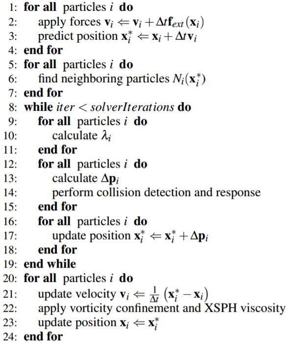
Dynamics
In order to have the particles fall with gravity, we implemented the following equations to set the initial position of the particles at the beginning of the timestep:
Incompressibility
We re-implemented the plane collisions and self collisions from project 4. For plane collisions, we determined when the particle crossed the boundary of the plane, and then moved the particle backwards by a certain amount, measured by the user defined Friction parameter.
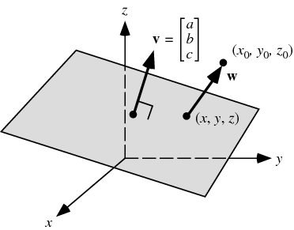
To check whether a particle cross the boundary of the plane, we took the dot product between the point and the normal vector. If the sign of said dot product switches signs, then we know it crossed the plane. Here is the result the simulation after adding collision constraints.
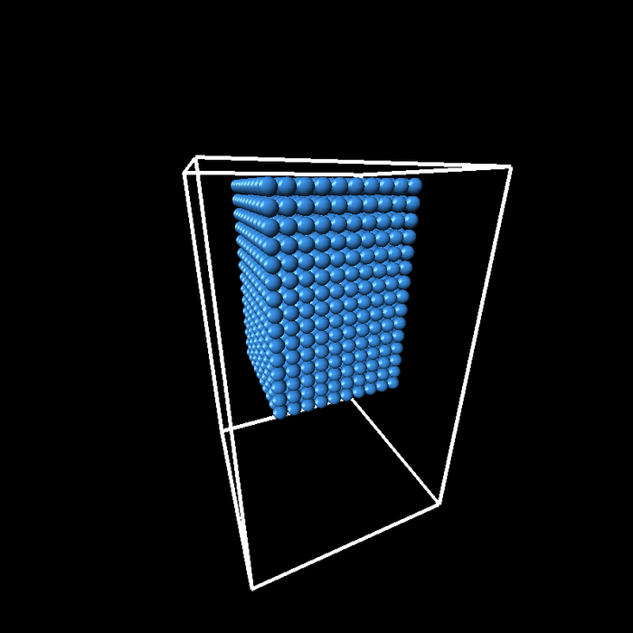
When we had implemented plane collisions but not yet implemented particle collisions, the particles were all converging into the four corners, rather than spreading properly like actual fluids do. In order to fix this, we implemented particle collisions. This, with the help of the random initialization that we talk about in the next section, would cause the fluids to spread properly once they hit the bottom of the container.
Random Initialization
As you can see, the particles bounce vertically after hitting the base plane. This is because the particles are initialized perfectly above each other, so the only forces push the particles upwards. After adding gaussian noise proportional to the radius of the particles, we get a simulation like this:
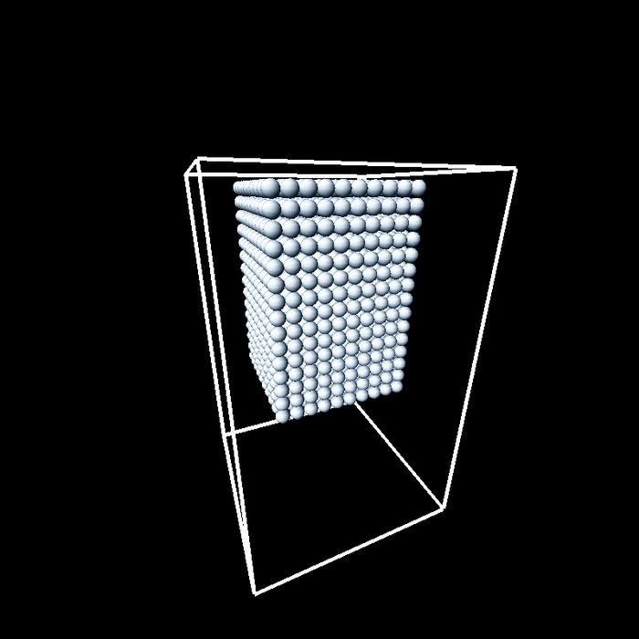
Incompressibility
The basic idea of incompressibility is that we would like to ideally keep the density of the fluid constant across all particles. To do this we first define a density function:
The density kernel W, can be chosen by the user. More info about this is presented later in the website. The next step is to define the density constraint function C
At optimum, the constraint would be 0, however this changes when the particles change position. We would like to find a value of Δp such that the C goes back down to 0. In this equation, we approximate Δp as ∇Cλ
Rearranging this equation, we solve for lambda:
To avoid lambda approaching ∞ when there are no neighbors, we add a small user defined parameter ε, which only affects the simulation when there are very few neighbors, or when the gradient is set to 0.
Our end goal is to find the Δp that would result in C being driven to 0. Therefore, by combining the following two equations, we found the equation for Δp
|
\Delta p\approx \nabla C \lambda
|
\nabla _{p_{k}}C_{i}=\dfrac{1}{\rho_{0}}\sum_{j}\nabla_{p_{k}}W(p_{i}-p_{j},h)
|
|
\Delta p=\dfrac{1}{\rho_{0}}\sum_{j}(\lambda_{i}+\lambda_{j})\nabla W(p_{i}-p_{j},h)
|
|
However, since change the position for one particle may change the density of the neighboring particles, we run this process multiple times every timestep, in order to more correctly maintain the particle density. We found that if we increased the number of particles, or increased the initial velocity of the particles, we needed to increase the number of iterations in order to maintain stability.
Choosing a Kernel
There were several possible choices for Kernels. To be a valid Kernel, it had to satisfy two properties:
- Zero at infinity. This prevents particles from interacting with other particles that are very far away.
- Even and normalized. This is natural because the corrective force for one particle should be equal and opposite for the other particle.
We tried two different Kernels, the Poly6 Kernel, and the Spiky Kernel:
| 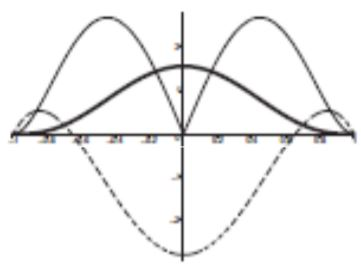 | 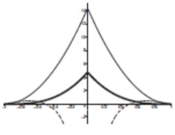 |
|
W_{poly6}=\begin{cases}
\dfrac{315}{64 \pi h^{9}}(h^{2}-r^{2})^{3} & 0 \leq r \leq h\\
0 & o.w.
\end{cases}
|
W_{spiky}=\begin{cases}
\dfrac{15}{\pi h^{6}}(h-r)^{3} & 0 \leq r \leq h\\
0 & o.w.
\end{cases}
|
Each Kernel has its advantages and disadvantages. The advantage of the Poly6 Kernel is that it has an r^2 term, so is easier to calculate. However, we can see that the gradient of the Poly6 Kernel is 0 at r=0. This hinders the Poly6 Kernel from pushing away particles which are very close to each other. The Spiky Kernel does not suffer from this. This combined with the fact that the Spiky Kernel is simpler, led us to choosing the Spiky Kernel for our animation.
After adding the Incompressibility constraints. With gravity only, single particles will splash upwards. With the density constraints, the particles will stay in groups, similar to real water.
Tensile Instability
In the previous gif, we can see that a few particles will fly up inexpectedly. If particles have too few neighbors, the incompressibility constraint will cause instability and erratic behavior. Therefore we add the Tensile Instability term, which minimizes the amount of effect the imcompressibility term when the particle has few neighbors. This prevents particles from flying upwards. Additionally, when the cube falls, we can see that the cube crunches up less around the corners, because this term reduces the effect of the density constraint, since there are few neighbors around the corners.
Viscosity
In order to make the motion more natural, we added viscosity. Viscosity makes slow particles travelling near fast particles move faster, and makes fast moving particles travelling near slow particles move slower.
| 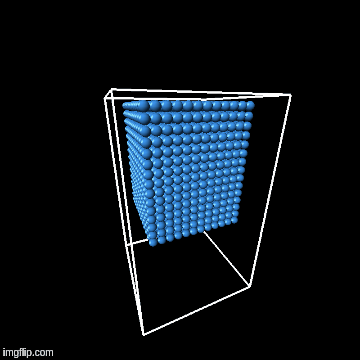 |
Vorticity
The particularly major problem that we encountered regarded the addition of vorticity. When we tried to add vorticity to improve the realistic movement even further by putting energy back into the particles, we ran into an issue with the paper apparently asking us for the gradient of the vorticity vector, which was already calculated into a constant vector by that point in the code, and to take that vorticity vector’s gradient and divide it by its magnitude. Because it was already a calculated value, this didn’t make mathematical sense, so we tackled this problem by extensively searching Google and attempting to work out the math ourselves. In the end, nothing on Google further explained it and we really got nowhere with the math, so we dropped vorticity altogether.
Vorticity
From this project, we learned about the importance of particular precision in the code, how we execute it, and the order in which we execute it. We also bolstered our understanding of particle simulation, and how sensitive the simulation is to parameters like step size.
End Results
We ran the simulation with 10,000 particles. We found that adding more particles required more iterations to prevent instability. This aligned with our intuition, because we believe that there are more possible forces acting on each particle.
|
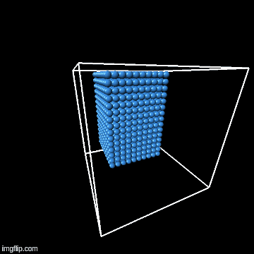
|
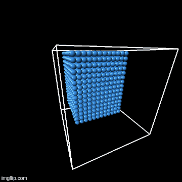
|

|
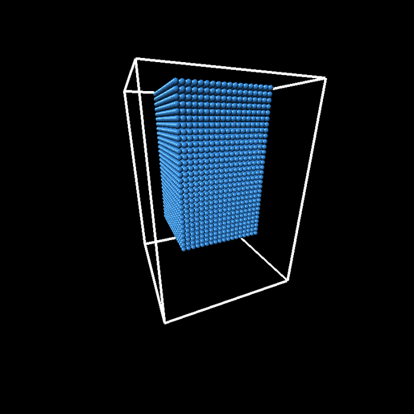
|

|
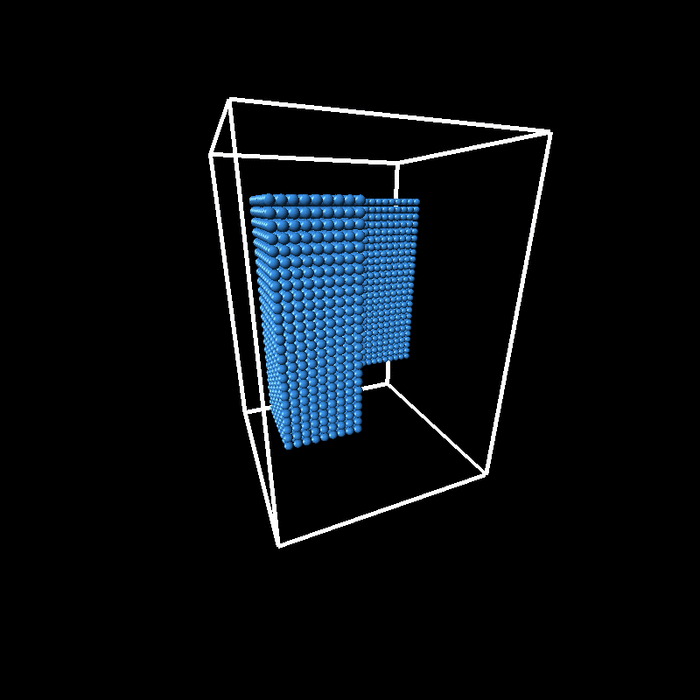
|

|
Contributions
Brendan: Viscosity, Simulations, Milstone Submission
Chris: Incompressibility, Tensile Instability, Collision Detection, Simulations, Final Report
Acknowledgements:
Akshay Madhani and Hubert Jung for help on things like finding constants and debugging.